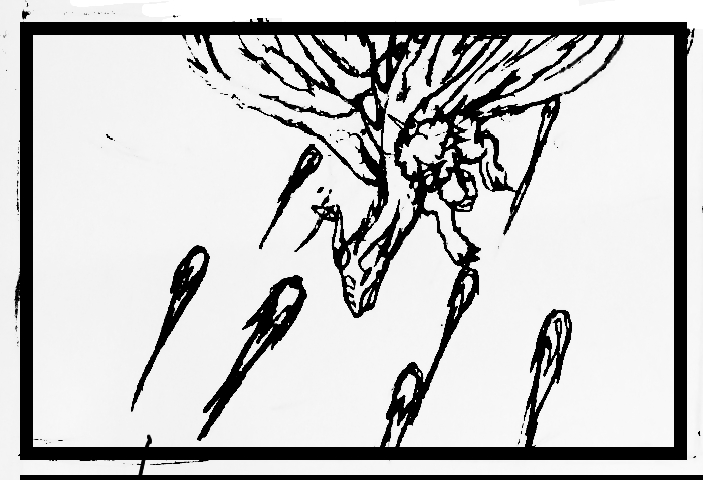
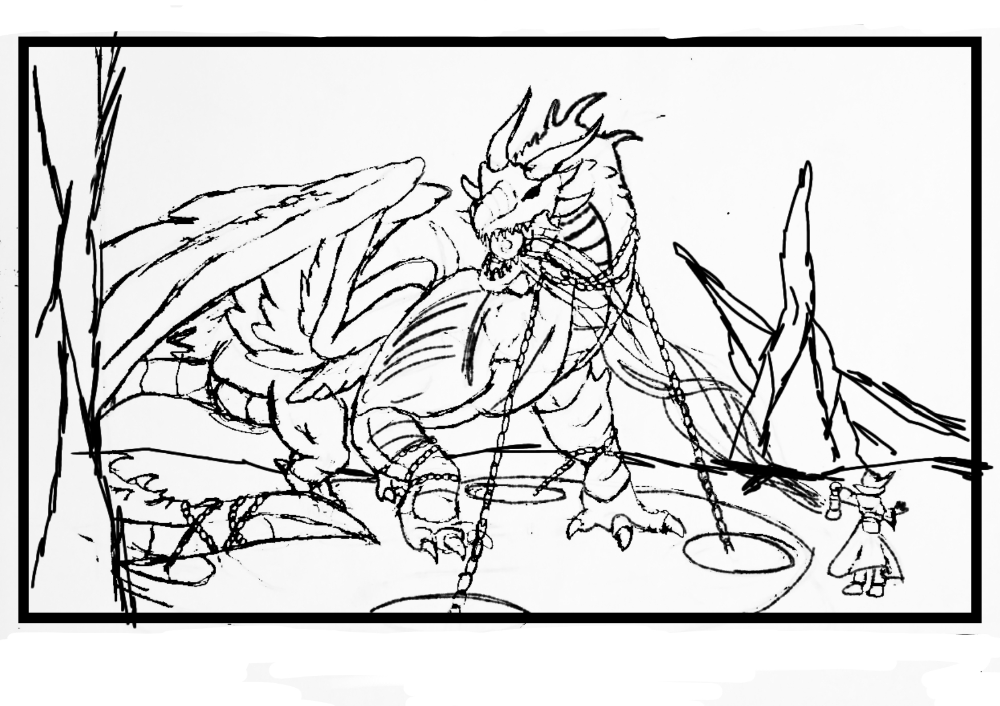
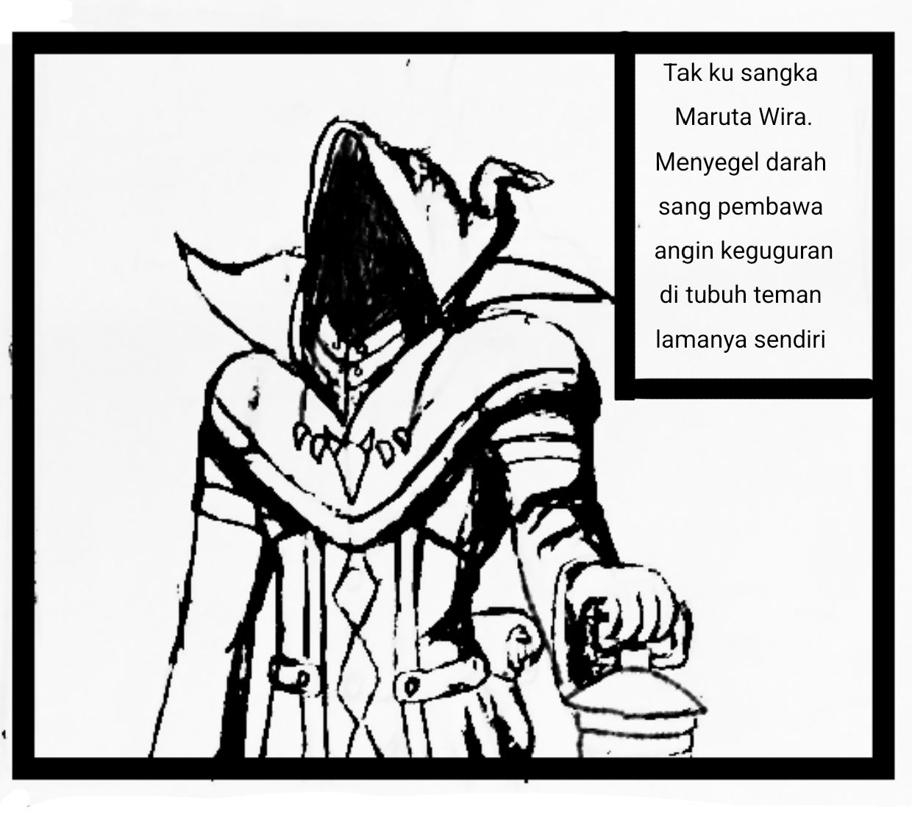
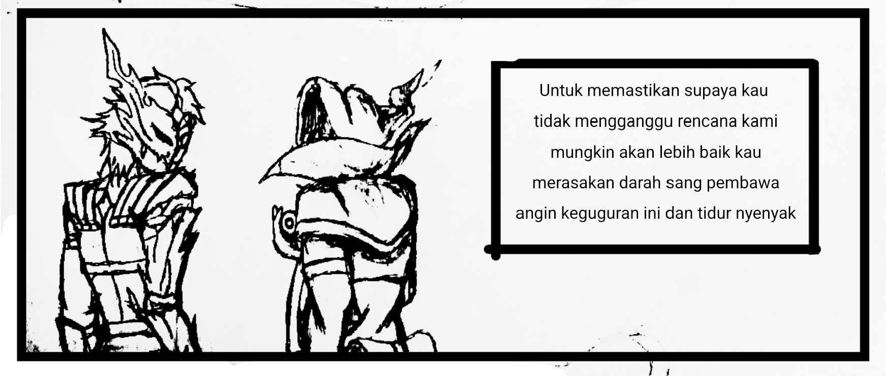

7 Kilauan Pelangi
Petualangan Zia Putri di Pandawa Akademi dimulai di sini. Bersiaplah untuk 7 kristal, 7 kesatria, dan 7 rahasia yang mengubah segalanya.
Chapter 4: Mimpi Darah & Runa yang Hilang
*Untuk suara Bahasa Indonesia terbaik, buka di Chrome Android Atau Cari Suara Indonesia
Di dalam mimpiku, aku melihat Runa sedang diserang.

Rantai-rantai bayangan melesat mencoba mengenai tubuh Runa. Disertai dengan ribuan bola api yang menyerang Runa secara bertubi-tubi. Runa kelihatannya sudah kewalahan menghadapi semua serangan yang dilancarkan terus-menerus ke arahnya.
Runa terkena serangan. Semua rantai melilit tubuh Runa dan akhirnya Runa jatuh tak berdaya. Di depannya terlihat dua sosok yang tidak asing.
"Tunggu dulu. Mereka kan anggota OSIS. Kenapa mereka menyerang Runa?" Kataku.

Salah satu anggota OSIS menghampiri Runa. Lalu dia seperti sedang merapalkan sebuah mantra sihir. Aku ingin membantu Runa, akan tetapi aku tak bisa berbuat apa-apa. Tubuhku tak bisa bergerak. Aku hanya bisa menyaksikan Runa sedang kesakitan.
Pria berjubah hitam tertawa sinis.

"Kalian berdua tidak akan pernah lolos dari ini semua!"
Runa mengaum keras.
OSIS yang satu lagi melangkah mendekati Runa. Menginjak kepala Runa dan memandang rendah padanya. "Lihatlah dirimu, kau sudah tak berdaya. Bisa-bisanya berkata seperti itu."

Lalu dia mengambil sedikit gumpalan merah tersebut dan memasukannya ke tubuh Runa.
Runa langsung berontak, tapi itu tidak berguna. Gumpalan itu sudah masuk ke tubuh Runa.
"Kurang ajar kalian. Kalian pasti akan menanggung akibatnya...!"
Runa mengaum keras, lebih keras dari sebelumnya.
Kesadaran Runa menghilang. Dia tak lagi berbicara. Yang terdengar hanya suara auman layaknya seekor naga yang tak berakal. Lalu Runa terbang pergi ke langit, entah ke mana.
"Runa tunggu! Jangan pergi, Runa!" Teriakku.
Lalu aku terbangun di atas tempat tidur. Nafasku ngos-ngosan. Badanku gemetar disertai dengan keringat dingin mengucur di tubuhku. Nirmala terkejut lalu dia berkata, "Astaga, Zi, kamu kenapa?"
"Sepertinya aku barusan bermimpi buruk," ucapku dengan nafas masih ngos-ngosan.
"Hey Zi, kayaknya kamu kecapean banget. Kamu sakit gak? Mau aku anter ke UKS gak?" Ucap Nirmala sambil khawatir.
Aku mencoba menenangkan diriku. Menarik nafas panjang.
"Gak papa, Nir. Aku udah gak papa kok."
"Bener nih udah gak papa?"
"Iya, aku gak papa, Nir."
Lalu Nirmala bertanya padaku, "Hey Zi, tadi ngomong-ngomong kamu abis dari mana? Aku daritadi nungguin kamu di kantin loh."
Aku menghela nafas. "Barusan aku dihukum oleh anggota OSIS. Dia menyuruhku untuk membersihkan kebun belakang sekolah."
"Diingat-ingat sepertinya siang tadi aku belum makan siang deh, ya sudahlah."
"Nah, mungkin itu masalahnya. Pasti karena kamu belum makan," ucap Nirmala.
Nirmala merenung sejenak. "Gimana kalo kita coba cek aja ke kantin sekarang? Siapa tau masih ada makanan yang tersisa buat kamu."
"Ah udah lah, aku juga gak terlalu laper—" Suara perut keroncongan terdengar sangat jelas.
Nirmala tertawa. "Noh kan, denger tuh perutmu aja udah teriak minta makan. Ayo, aku yakin sekarang masih sempat." Nirmala sambil menarik tanganku.
Aku nurut berdiri, tapi kepalaku masih muter. Bayangan Runa yang mengaum jadi naga... dan gumpalan merah itu... rasanya nyata banget.
OSIS nyerang Runa? Gumpalan merah itu apa? Dan kenapa Runa jadi naga liar? Zia harus cari jawaban! CHAPTER 5 PANAS 👇
Traktir Kopi Biar Lanjut ☕